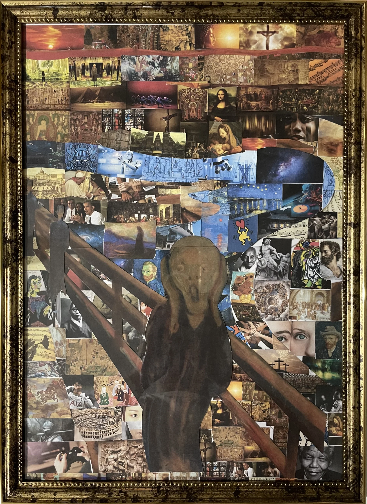

COMBINE / VISUALIZATION
서로 다른 이야기의 결합
경험과 감정, 서로 다른 이야기가 만나 새로운 의미를 만드는 ‘COMBINE’을 콜라주로 표현했습니다.
- YEAR / SEMESTER
- 2학년 2학기 · 2024
- PROJECT TYPE
- 시각화 · 콜라주
- CONTRIBUTION
- 개인 시각화 작업
- SITE / SUBJECT
- What is Art?

THE IDEA
생각의 출발점
예술을 다양한 이야기의 결합으로 바라보았습니다. 서로 다른 배경과 우연한 만남, 경험의 조각들이 연결되는 방식을 시각화하고, 이후 쉼터와 아트센터 설계의 개념으로 이어 갔습니다.
- 01
예술에 대한 질문
작품에 담긴 의미와 만들어지는 과정에 주목했습니다.
- 02
조각들의 연결
이미지를 자르고 결합하며 경험과 이야기의 관계를 표현했습니다.
- 03
설계로 확장
시각화에서 정리한 COMBINE 개념을 양림동의 장소와 공간에 적용했습니다.
PROCESS & OUTCOME
과정과 결과
사진을 누르면 크게 볼 수 있습니다.